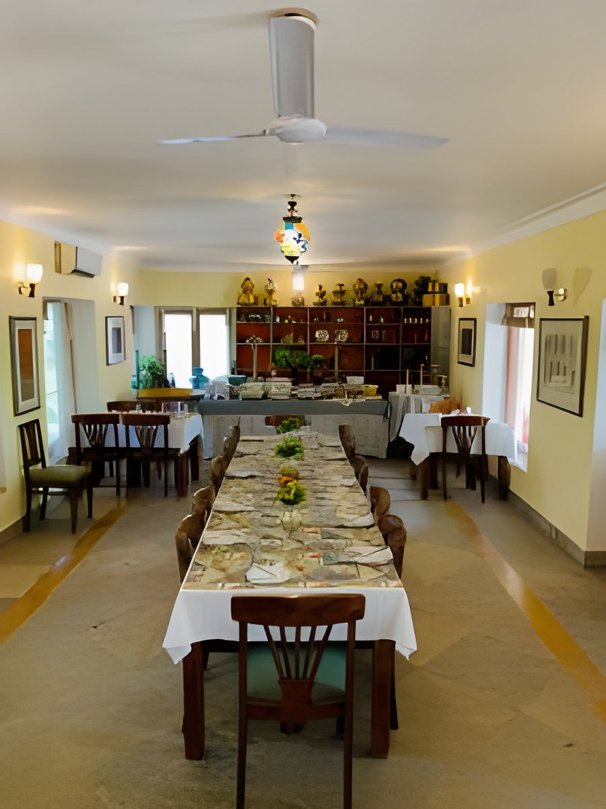

From our farm to your plate
Organic vegetables from our own fields, spices processed on the property and recipes Jyoti grew up with.

Food is one of the reasons guests come back to Devra. Most vegetables come from our own farms and are grown free of toxic chemicals, and many of the spices are processed by locals right here on the property.

Authentic Rajasthani cuisine
Every meal is cooked in traditional Rajasthani style and supervised by Jyoti Jasol herself. She learnt these recipes growing up in a large joint family and loves sharing the stories behind each dish.
Something for everyone
Alongside Rajasthani food, the kitchen makes a variety of North Indian dishes and can adjust any meal to your taste. Pasta, noodles and sandwiches are available on request.
Cook with Jyoti
Jyoti conducts heritage cooking classes on appointment. Ask us when you book and we will plan a session during your stay.